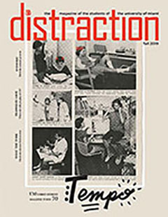
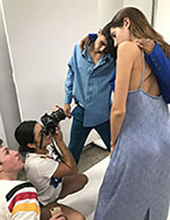
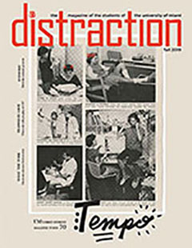
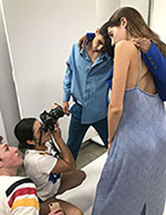

I am a creative in every sense of the word: I write, I design, I sing and act, I dabble in play direction, flirt with photography and obsess over film and television production.
PUBLISHED CLIPS
Writing and reporting are some of my fiercest passions. Check out some of my favorite articles published in outlets like Distraction Magazine, Whisky Advocate Magazine, the Miami Herald and more.
Read More 



GRAPHIC DESIGN & ART DIRECTION
Whether I am obsessively resizing text boxes until the wee hours of the night or directing a fashion shoot, graphic design and art direction are methods of storytelling as important as writing. Here are some of my original magazine layouts in Distraction Magazine.